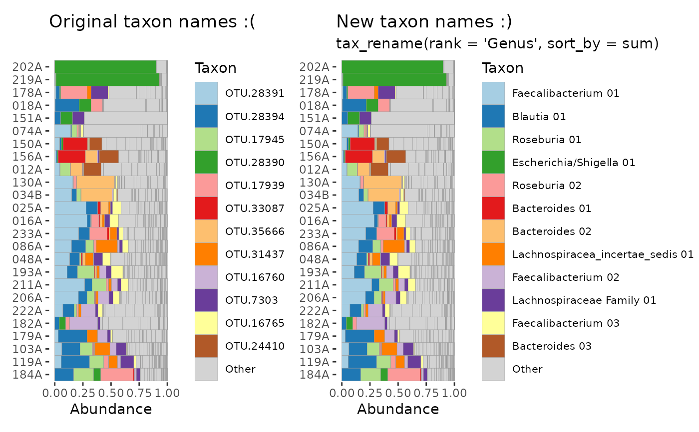

R/tax_rename.R
tax_rename.RdPairs classification at the given rank with a numeric ranking suffix (based on abundance or prevalence data) to automatically create informative taxa names.
tax_rename(
ps,
rank,
sort_by = sum,
transform_for_sort = "identity",
pad_digits = "auto",
sep = " ",
...
)phyloseq object
name of rank to use in new taxa names
how to sort taxa for numbering within rank-based groups (a tax_sort option)
named of transformation to apply to taxa before sorting
how long should the numeric suffixes be? see details
character to separate the rank prefixes from numeric suffixes
additional arguments passed to tax_sort
phyloseq object
e.g. "Bacteroides 003" for the third most abundant Bacteroides OTU or ASV.
Taxa are returned in original order, and otu_table is returned un-transformed.
pad_digits options:
"auto" –> minimum digits to have equal length numbers within groups
"max" –> minimum digits to have equal length numbers across all groups
A number: e.g.
3 –> 001, 002, ..., 042, ..., 180, ...
1 –> 1, 2, ..., 42, ..., 180, ...
phyloseq::taxa_names for accessing and manually setting names
library(phyloseq)
data("ibd", package = "microViz")
ps <- ibd %>%
tax_filter(min_prevalence = 3) %>%
tax_fix()
# show a few of the current, uninformative names
taxa_names(ps) %>% head(15)
#> [1] "OTU.49" "OTU.50" "OTU.52" "OTU.54" "OTU.56" "OTU.57" "OTU.59"
#> [8] "OTU.76" "OTU.90" "OTU.92" "OTU.108" "OTU.142" "OTU.185" "OTU.197"
#> [15] "OTU.200"
taxa_names(ps) %>% tail(15)
#> [1] "OTU.36191" "OTU.36241" "OTU.36243" "OTU.36244" "OTU.36245" "OTU.36247"
#> [7] "OTU.36248" "OTU.36290" "OTU.36292" "OTU.36293" "OTU.36294" "OTU.36295"
#> [13] "OTU.36297" "OTU.36300" "OTU.36301"
# change names to genus classification plus number
psNewNames <- ps %>% tax_rename(rank = "Genus")
taxa_names(psNewNames) %>% head(15)
#> [1] "Faecalibacterium 203" "Escherichia/Shigella 081"
#> [3] "Clostridium_XlVa 045" "Lachnospiraceae Family 20"
#> [5] "Bacteroides 0825" "Flavonifractor 25"
#> [7] "Ruminococcaceae Family 05" "Clostridium_XlVa 028"
#> [9] "Faecalibacterium 204" "Escherichia/Shigella 088"
#> [11] "Escherichia/Shigella 130" "Clostridium_XlVa 110"
#> [13] "Lachnospiraceae Family 58" "Lachnospiracea_incertae_sedis 34"
#> [15] "Bacteroides 0967"
taxa_names(psNewNames) %>% tail(15)
#> [1] "Oscillibacter 22" "Dialister 067"
#> [3] "Bifidobacterium 36" "Roseburia 123"
#> [5] "Oscillibacter 19" "Lachnospiracea_incertae_sedis 45"
#> [7] "Enterococcus 15" "Bacteroides 0205"
#> [9] "Bacteroides 0187" "Bacteroides 0165"
#> [11] "Dialister 015" "Bacteroides 0142"
#> [13] "Bacteroides 0338" "Dorea 04"
#> [15] "Bacteroides 0226"
# demonstrate some alternative argument settings
psNewNames2 <- ps %>% tax_rename(
rank = "Family", sort_by = prev, pad_digits = "max", sep = "-"
)
taxa_names(psNewNames2) %>% head(15)
#> [1] "Ruminococcaceae-0216" "Enterobacteriaceae-0101"
#> [3] "Lachnospiraceae-0191" "Lachnospiraceae-0192"
#> [5] "Bacteroidaceae-0755" "Ruminococcaceae-0217"
#> [7] "Ruminococcaceae-0218" "Lachnospiraceae-0082"
#> [9] "Ruminococcaceae-0361" "Enterobacteriaceae-0140"
#> [11] "Enterobacteriaceae-0141" "Lachnospiraceae-0404"
#> [13] "Lachnospiraceae-0405" "Lachnospiraceae-0317"
#> [15] "Bacteroidaceae-0756"
taxa_names(psNewNames2) %>% tail(15)
#> [1] "Ruminococcaceae-0522" "Veillonellaceae-0223"
#> [3] "Bifidobacteriaceae-0036" "Lachnospiraceae-0623"
#> [5] "Ruminococcaceae-0523" "Lachnospiraceae-0403"
#> [7] "Enterococcaceae-0018" "Bacteroidaceae-0207"
#> [9] "Bacteroidaceae-0280" "Bacteroidaceae-0754"
#> [11] "Veillonellaceae-0130" "Bacteroidaceae-0143"
#> [13] "Bacteroidaceae-0426" "Lachnospiraceae-0036"
#> [15] "Bacteroidaceae-0208"
ps %>%
tax_rename(rank = "Genus", pad_digits = 2) %>%
taxa_names() %>%
head(15)
#> [1] "Faecalibacterium 203" "Escherichia/Shigella 81"
#> [3] "Clostridium_XlVa 45" "Lachnospiraceae Family 20"
#> [5] "Bacteroides 825" "Flavonifractor 25"
#> [7] "Ruminococcaceae Family 05" "Clostridium_XlVa 28"
#> [9] "Faecalibacterium 204" "Escherichia/Shigella 88"
#> [11] "Escherichia/Shigella 130" "Clostridium_XlVa 110"
#> [13] "Lachnospiraceae Family 58" "Lachnospiracea_incertae_sedis 34"
#> [15] "Bacteroides 967"
# naming improvement on plots example
library(ggplot2)
library(patchwork)
# Overly aggressive OTU filtering to simplify and speed up example
psExample <- ps %>% tax_filter(min_prevalence = 0.4)
#> Proportional min_prevalence given: 0.4 --> min 37/91 samples.
# before OTU renaming
before <- psExample %>%
ps_filter(activity == "inactive") %>%
tax_names2rank("Taxon") %>%
comp_barplot(
tax_level = "Taxon", n_taxa = 12, other_name = "Other",
merge_other = FALSE, bar_outline_colour = "grey60"
) +
coord_flip() +
ggtitle("Original taxon names :(")
# after OTU renaming
after <- psExample %>%
ps_filter(activity == "inactive") %>%
tax_rename(rank = "Genus", pad_digits = "max") %>%
tax_names2rank("Taxon") %>%
comp_barplot(
tax_level = "Taxon", n_taxa = 12, other_name = "Other",
merge_other = FALSE, bar_outline_colour = "grey60"
) +
coord_flip() +
ggtitle("New taxon names :)", "tax_rename(rank = 'Genus', sort_by = sum)")
before + after & theme(legend.text = element_text(size = 8))

# ordination example
psExample %>%
tax_rename(rank = "Genus", sort_by = sum) %>%
tax_names2rank("otu") %>%
tax_transform("clr", rank = "otu") %>%
ord_calc() %>%
ord_plot(
size = 2, colour = "ibd", shape = "circle", alpha = 0.5,
plot_taxa = 1:10,
tax_vec_length = 0.5,
tax_lab_style = tax_lab_style(
type = "text", max_angle = 90, check_overlap = TRUE,
size = 2.5, fontface = "bold"
),
tax_vec_style_all = vec_tax_all(alpha = 0.1)
) +
coord_fixed(clip = "off") +
stat_chull(aes(colour = ibd)) +
scale_colour_brewer(palette = "Dark2") +
theme(panel.grid = element_line(size = 0.1))
#> Warning: The `size` argument of `element_line()` is deprecated as of ggplot2 3.4.0.
#> ℹ Please use the `linewidth` argument instead.